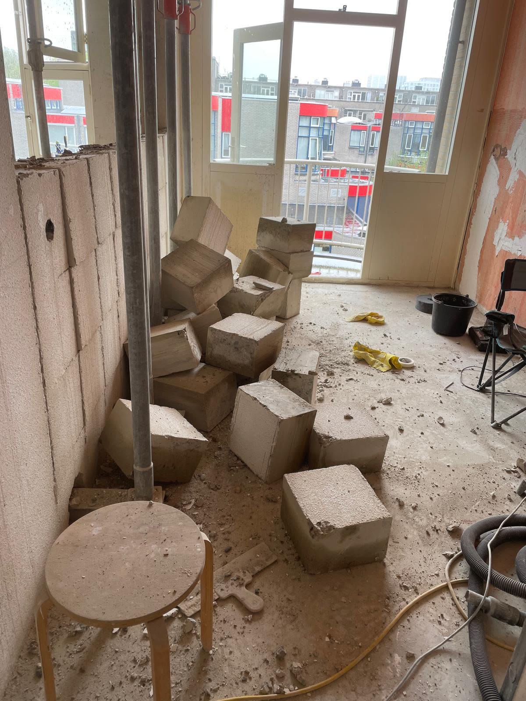
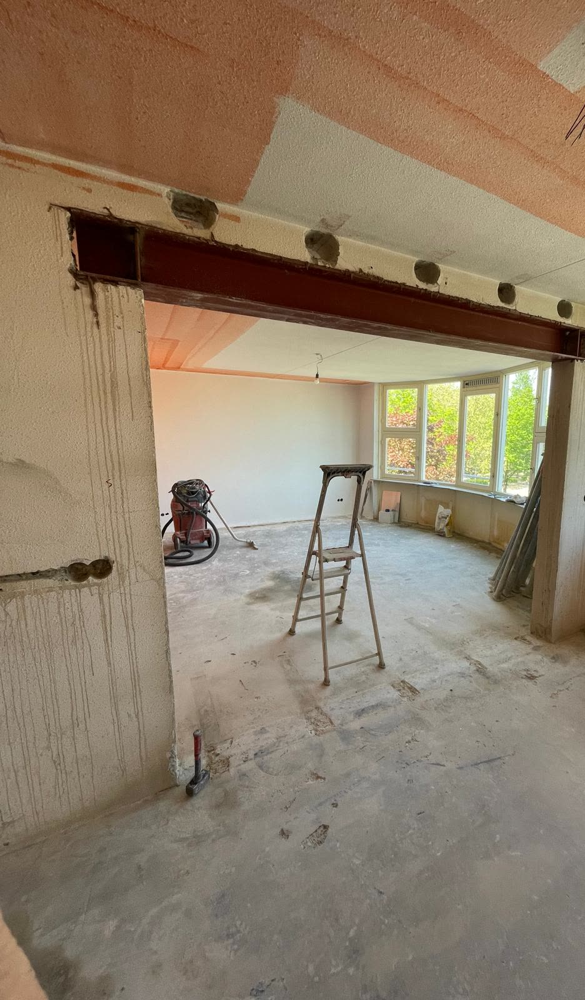

Betonwand in plaats van metselwerk
In veel appartementencomplexen zijn dragende binnenwanden gemaakt van gewapend beton. Dat breek je niet weg met een sloophamer. We tekenen eerst de sparing en de profielen precies af op de wand en zagen het beton daarna met stofafzuiging in hanteerbare blokken, van boven naar beneden.


Stempelen met stalen naalden en de vloer eronder
Bij een betonwand in een flat worden vaak gaten bovenin de wand geboord waar korte stalen balken doorheen gaan, de naalden. Onder elke naald staat een stempel, en onder de stempels liggen verdeelbalken die de kracht over de vloer spreiden. Meer over deze opbouw staat bij dragende muur stutten.
Omdat er onder jouw appartement een andere woning zit, rekent onze constructeur na of de vloer dit gewicht draagt en of er een verdieping lager extra stempels nodig zijn.


Afvoer via ladderlift, weinig overlast in het trappenhuis
Zware betonblokken en slooppuin door het trappenhuis of de lift sjouwen geeft schade en veel stof in het gebouw. Daarom zagen we de wand in blokken die nog te tillen zijn en voeren we ze via een raam of balkon met een ladderlift rechtstreeks af in de container beneden. Ook de stalen ligger gaat vaak op die manier naar boven. Zo blijft de algemene hal schoon en heel. Lees meer over deze werkwijze bij draagmuur slopen.


VvE, splitsingsakte en omgevingsvergunning
In bijna elke splitsingsakte horen de dragende wanden bij de gemeenschappelijke delen van het gebouw. Dat betekent dat je naast een omgevingsvergunning van de gemeente ook toestemming van de Vereniging van Eigenaren nodig hebt, vaak via een besluit op de ledenvergadering.
Daarvoor heeft het VvE-bestuur duidelijke stukken nodig. Onze constructeur maakt een constructieberekening en constructietekening volgens de Eurocode. Daarin staan de nieuwe stalen ligger, de opleggingen en een toets op de stabiliteit van het gebouw als een grote wand deels wegvalt. Diezelfde stukken gebruiken wij om de omgevingsvergunning bij de gemeente aan te vragen.
Ligger erin en strak afgewerkt
Zodra de muur eruit is, gaat de stalen ligger op zijn plek en wordt de naad erboven stevig aangevuld. Nadat dat is uitgehard, neemt het staal het gewicht over en gaan de stempels weg. Daarna wordt de ligger afgetimmerd, zodat de wand klaar is voor het stuc- en schilderwerk.


Vragen over een doorbraak in een appartement
Heb ik toestemming van de VvE nodig voor een draagmuurdoorbraak in een appartement?
Ja, vrijwel altijd. Dragende wanden horen volgens de splitsingsakte meestal bij de gemeenschappelijke delen van het gebouw. Naast een omgevingsvergunning van de gemeente heb je daarom ook toestemming van de VvE nodig, vaak via de ledenvergadering.
Moet er bij een appartement ook bij de onderburen gestempeld worden?
Dat toetst de constructeur vooraf. De stempels in jouw woning dragen het gewicht door naar de vloer eronder. Kan die vloer de stempellast niet rechtstreeks hebben, of staan de onderliggende woningen op dezelfde draaglijn, dan wordt er soms ook een verdieping lager gestempeld.
Hoeveel overlast geeft het zagen van een betonwand voor de buren?
Het zagen in gewapend beton maakt geluid, maar de overlast blijft beperkt tot de dagen waarop gezaagd wordt. We werken met stofafzuiging en voeren de gezaagde blokken via een ladderlift door het raam of vanaf het balkon af, zodat de hal en de lift van het gebouw schoon en heel blijven.
Wie levert de stukken aan voor de VvE en de gemeente?
Wij maken de tekening en de constructieberekening volgens de Eurocode, inclusief de toets op de stabiliteit van het gebouw als dat aan de orde is. Je krijgt één set stukken die je aan het VvE-bestuur kunt voorleggen en die wij ook voor de omgevingsvergunning bij de gemeente indienen.